Fractional AI Mandate Charter
A practical contract for aligning executive ambition, decision rights, portfolio choices, governance, workflow adoption, and permanent ownership.
| Clause | Charter prompt | Minimum evidence | Named authority |
|---|---|---|---|
| 1 · Outcome | What operating, customer, risk, employee, or market consequence must change? | Baseline, unit, beneficiary, value hypothesis, time horizon | Executive sponsor and accountable business owner |
| 2 · Authority | Who can fund, sequence, stop, release, override, and accept residual risk? | Decision record, retained human judgment, escalation path | Board/committee, sponsor, risk and workflow owners |
| 3 · Portfolio | Which work will be built, bought, partnered, delayed, scaled, held, or stopped? | Value, feasibility, data, reuse, capacity, cost, dependency | Portfolio forum with finance and technical representation |
| 4 · Guardrails | What must be true before AI is used, released, expanded, or allowed to act? | Access, sources, evaluation, privacy, security, fallback, monitoring | Technical, data, risk, legal, security, and release authority |
| 5 · Adoption | What changes in work, role, judgment, handoff, support, and behavior? | Workflow owner, training, usage, repetition, feedback, performance | Business/workflow owner and enablement owner |
| 6 · Continuity | What permanent leadership and operating system should exist at handoff? | Cadence, records, talent, owner readiness, unresolved decisions | Permanent executive owner or approved search mandate |
Charter decision
Initiate
Outcome, sponsor, owner, controls, and evidence are strong enough to mobilize.
Repair first
The opportunity is credible, but authority, data, governance, or operating capacity must be fixed before funding the work.
Do not pursue
The work lacks strategic value, accountable ownership, feasible evidence, or an acceptable risk posture.
Charter review cadence
Four review moments
| Moment | Primary question | Charter movement | Decision |
|---|---|---|---|
| Discovery | Is the stated AI ambition the actual operating mandate? | Draft all six clauses; identify missing facts and owners. | Proceed with discovery, repair sponsorship, or stop. |
| Portfolio funding | Which small set of work earns capacity and executive sponsorship? | Lock Outcome, Authority, Portfolio, and Guardrails. | Fund, sequence, buy, partner, delay, or reject. |
| Proof review | Is the operating system producing value, control, and adoption evidence? | Update Guardrails, Adoption, and economic evidence. | Scale, redesign, hold, or stop. |
| Handoff review | Can permanent leaders govern and improve the system independently? | Lock Continuity and unresolved-decision record. | Transfer, hire, extend for a bounded mandate, or close. |
Mandatory attachments
Decision-rights map
Who recommends, decides, executes, reviews, overrides, accepts risk, and communicates.
Portfolio register
Outcome, owner, workflow, technical posture, dependencies, evidence, economics, and next decision.
Governance and exception record
Policy, access, data and source controls, evaluation, fallback, human authority, exceptions, and closure.
Adoption and handoff scorecard
Repeated use, workflow change, support burden, trust, owner readiness, talent, cadence, and open risk.
Illustrative context shifts
| Client context | Likely first emphasis | Typical hidden burden |
|---|---|---|
| Financial services | Governance, portfolio selection, data/model controls, board confidence | Shadow AI, fragmented authority, evidence burden, vendor exposure |
| Professional services | Repeatable delivery leverage, knowledge controls, practitioner adoption | Client confidentiality, craft erosion, local experimentation, weak reuse |
| Industrial operations | Workflow reliability, machine/quality signals, human override, standard work | Disconnected telemetry, exception handling, safety/quality authority |
| AI-enabled growth | Differentiating capability, platform choices, cost/evaluation, talent sequence | Vendor lock-in, release discipline, unclear product/technology ownership |
All scenarios are illustrative discovery contexts. They are not claims about confidential Axial Search clients. The charter is independent candidate work by Russell Dudek.